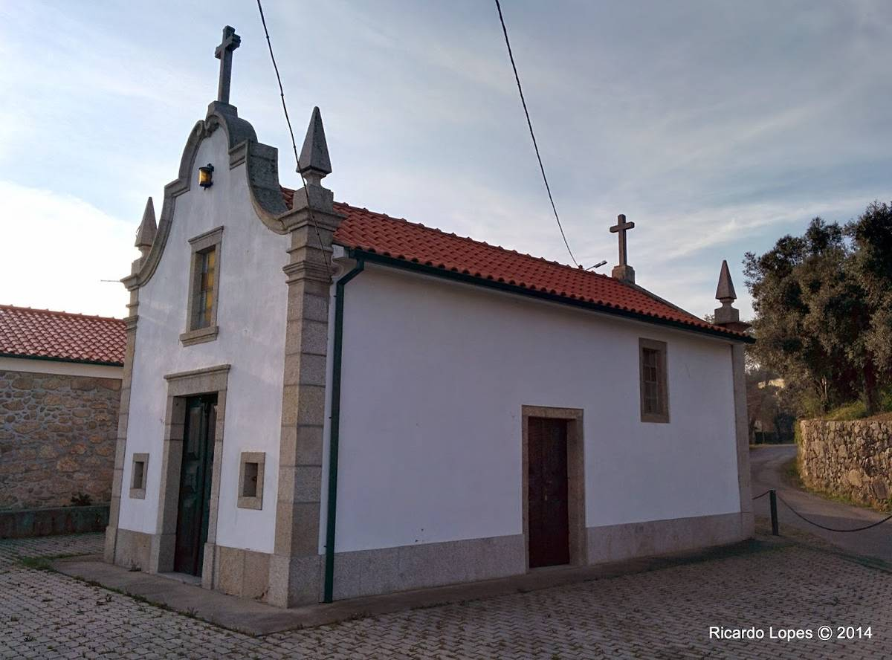

Campo
Igrejas e Capelas
Igreja Paroquial do Campo
A Igreja Paroquial do Campo localiza-se na freguesia de Campo(também conhecida como S. Salvador do Campo), concelho de Barcelos, distrito de Braga, em Portugal.
Saber Mais >

Capela de Santo Amaro
A Capela de Santo Amaro localiza-se na freguesia de Campo(também conhecida como S. Salvador do Campo), concelho de Barcelos, distrito de Braga, em Portugal.
Saber Mais >
Sobre a Freguesia
| Administração | |
| Tipo: | Junta de Freguesia |
| Presidente: | (PPD/PSD - CDS-PP - PPM) |
| Demografia | |
| Área | |
| Total: | 2,25 km2 |
| População (2011) | |
| Total: | 983 |
| Densidade: | 436,9 hab/km2 |